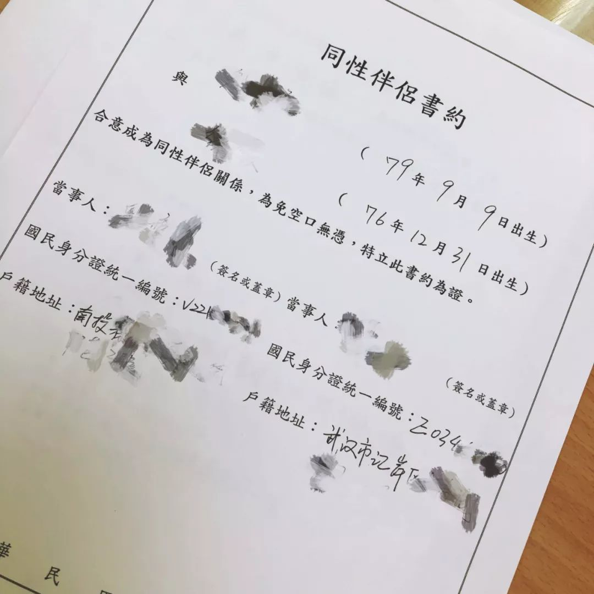
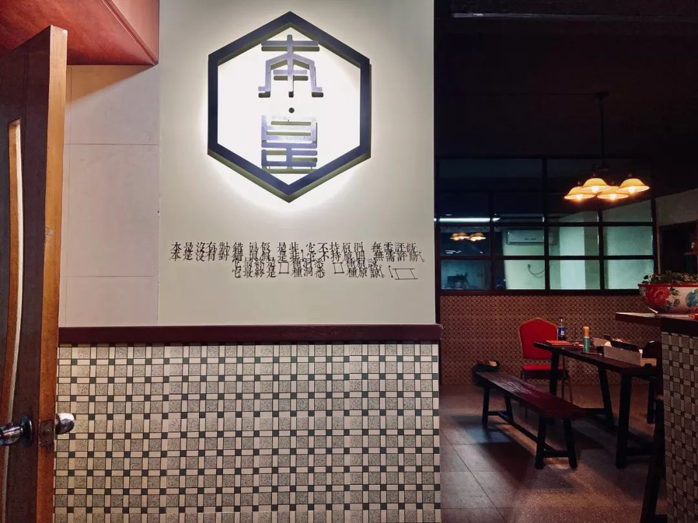

疫情中，驰援武汉的私家车主
原文链接 备份链接 个体救援，也是新冠肺炎疫情的重要救援力量，从农民工到退伍军人，他们以杯水尝试灭熄瘟疫之火，很多人甚至都没有留下姓名。大年初五，私家车主雷鹏驾车16小时急行1100公里，直抵武汉，成为了一名救援志愿者。 这是真实故事计 …
2020年的情人节要到了，在这个大部分人都要在家度过的特别的一天，我们为你带来了一个来自武汉的爱情故事。
台湾人刘婷，认识武汉人杨夕一年后，搬到了武汉。两个人开了桌游吧，一起生活。
在这次疫情中，刘婷本来可以搭上台湾撤离台胞的飞机，回到更安全的家乡。但为了杨夕，她留了下来。
我们邀请了身处武汉的情侣杨夕、刘婷，一起聊了聊这些天里发生的故事。

* 扫描小程序码在“喜马拉雅”收听，订阅即可收到无所不JI未来节目的推送。
粉色字体开头为杨夕自述，
蓝色字体开头为刘婷自述。
我们是在LesPark上面认识的。2018年4月25日我们在一起，9月1号第一次见面，我去台湾找她。第二年4月，刘婷就搬到武汉来生活了。
在高雄的时候，我们做了同性伴侣民事登记。民事登记虽然看起来很形式，但是其实它在台湾可以有一定的保障。另一方面，我也希望能让杨夕安心，因为我真的只想跟她走下去。
去年年底，我们在武汉办了一场婚礼。我对婚礼这种形式感特别强的事情很喜欢。在大陆这边，我没有办法给刘婷很实质的（法律层面的）保障，但婚礼的话，100场我都愿意。

2018年，刘婷和杨夕在高雄办理同性伴侣注记
刘婷来武汉之后，我们两个一起开了个桌游吧。当时有朋友在开，问我们要不要入股，但我还是希望能跟刘婷一起做点事情。她当时想做餐饮，但是我评估风险有点大。后来我们租了一个带厨房的场地，在这里做桌游吧，刘婷也可以在小厨房里施展一下做吃的。
留在这里，至少摸得到、照顾得到
我们12月中旬就听说有疫情了。当时刚好有一个桌游吧的客人，他认识协和医院的医生，就说好像有类似于SARS的病毒开始蔓延。我当时就想，SARS已经爆发过一次，不太可能再有。而且正常情况下国家不是也会说嘛，我们就没有重视。
1月13号，我因为奔丧回了趟台湾。回去的时候感觉蛮奇怪的，因为所有人都很紧张地问我，说武汉疫情很严重，你有没有事。我就回答说华南海鲜市场离我们好远，我感觉还好。等我16号回来武汉的时候，才发现原来已经这么严重了，难怪大家都问我，有种恍然大悟的感觉。
我们桌游吧是22号关的店，当时在我们的桌游群发了一个公告，跟大家讲今年过年不开门，告诉大家好好呆在家里之类的。本来春节期间对桌游吧的生意来说是蛮长的一个黄金时段，但只能舍弃了。还是安全更重要。

杨夕和刘婷在武汉开的桌游吧
封城之前，杨夕的妈妈还让我们去海南，因为他们每年这时候都在那边休假。当时我们居然拒绝了，因为那时候没有想到会封城，以及疫情有这么严重。
后来，刘婷有看到台湾从武汉撤台胞的新闻，然后跟我讲说台湾有飞机过来接我们，我当时就说那你赶快联系一下走吧，因为如果回到台湾，就算你不幸感染了，起码医疗资源更丰富一些，不会出现没有床位的状况。她的爸爸、家里的长辈都在劝她，但她执意不回去。
撤离的前一天，我爸让我跟爷爷打电话，我爷爷就说你赶快回来，不要在那边呆着了，好危险之类的。我就跟他们讲不用担心，我很好，我天天都在家里，也没有发烧什么的。
正常情况下台胞撤离武汉的流程，是先去联系台商协会，跟台办留一下我的资料，然后在规定时间去机场集合，检查然后出发。台湾虽然有派飞机过来，但很多小细节没做好，比如对撤离人员身体的检查。第一批撤离的乘客里，有3个都确诊了。
我说服杨夕的过程就是，如果我搭上了飞机，飞机上有感染者怎么办。飞机这种封闭的空间感染风险很高。后来新闻爆发，说真的飞机上有人确诊，我就说，你看好险我没搭那一班。
劝刘婷的时候，我还出动了我妈妈。因为妈妈每天都会问我们俩人好不好，那天我就刚好跟我妈说，台湾来飞机接了。她就说那赶快让刘婷回去啊，我就说我说服不了她，要不然你跟她说一下。我就把电话给了刘婷，结果三两句话就也用同样的说辞把我妈妈说服了。
主要我觉得如果我回台湾，杨夕一个人在这里也不好。因为父母都不在武汉，长辈什么的离她也很远。她一个人在这，我也会担心。而且不知道这个疫情接下来会发展到什么时候才会结束。两个人身处异地，可能就像以前异地时一样，因为思念对方天天哭。我就觉得还不如我留在这里，至少摸得到，照顾得到。她如果有什么事，我也都知道。
帮大家买2000只口罩，被骂“发国难财”
在家的这段时间里，我们还做了一点小公益。
一开始是杨夕认识一个朋友，可以从厂家拿一箱口罩。她很热心，就想顺便问一下大家有没有缺的。因为当时疫情来的很快，但下达封城命令的政策很突然，很多人可能没有时间买到口罩，况且口罩的资源远远不够。
杨夕当时提议组一个群，收集大家的信息，为大家寄送口罩。当时是希望把一部分给急需的人，剩下的捐给医院。但她之前没有做公益的经验，而我在台湾时在公益单位工作过，所以就在一旁协助她。
其实一箱口罩并不多，一共是40盒，2000个。我们在朋友圈发了之后，名单都排爆了。按我们的清点，加入这个群的人，总共需求有1万多个，但工厂那边过年前只能给我们最后一批2000个。所以我们又去跟群里的人沟通，最后规定每个人只能领取一盒，防止别人囤口罩或者倒卖。

刘婷在打包寄给大家的口罩
大部分人都挺热心的，但是也有人不理解，还说我们是骗子。我们从厂家买来是6毛一个，我们给大家也是6毛一个，我们真的分毛不取。但我记得有个骂我的人，就说以为是免费的，还说我们是发国难财。
其实对我们来说，我们口罩钱已经付出去了，最后收回来多少，你给不给我钱，其实我根本就不在意。如果有很急的需求，完全没有口罩戴，我可以给你送过去都行。但是这样说我，我还是很伤心的。
做公益就是这样，有一些不明白的人不能理解，以为是免费的。我们当时没有在群里说话，但很多知道状况的人就会说他，后来他也被赶出去了。在这次事件中，也有很多人鼓励我们，帮我们很多，我们也认识了很多热心的人，其实也蛮开心的。
如果你们病了，爸爸就算冲岗也要救你们
在家的这些天，之前状态一直都还好，但我这几天有一点抑郁，会哭。因为在家呆的时间越来越长，每天铺天盖地的新闻，让人蛮压抑的。没有心理疾病的人可能都会抑郁，更何况我之前有抑郁症。能坚持到现在才发病，感觉自己经很棒了。
每天就看看电视，看看电影，轮流煮吃的，跟之前桌游吧的客人们玩玩线上剧本什么的。杨夕之前就会常咳嗽，而且经常发低烧。疫情的时候，她咳嗽我就会很紧张。这次疫情的感染症状不是有发烧嘛，所以她每次表现出来的状态都会让我觉得她是不是感染了，就会很紧张。
有一次她跟我说，我发烧了怎么办？我就很紧张地摸她，看她有没有事。到后来我越来越习惯她跟我说发烧了，然后我摸一下，就告诉她你没事。有时候也是心理作用，前几天我们去买东西，回来我都会觉得喉咙很痛，但其实是自己想象出来的。
2019年底，杨夕和刘婷在武汉举办了婚礼
我爸这段时间展开了对刘婷的爱，每次打电话都说，你们一定要好好的，你们两个人中间要是有任何一个人病了，爸爸开车子回来，就算冲岗也要救你们。还会跟我们说，一定要睡眠充足，要吃饱，“用钱养命”，提升免疫力才能健健康康的。
台湾那边，爸爸妈妈还是会担心，但是我比较早离开家里，比较独立，所以基本上就跟以前一样，跟他们说不用担心，杨夕跟我都在一起，大家每天都不出门之类的。跟他们讲一些安心的话，报喜不报忧。
接下来还没有什么规划，先等城开了，再慢慢来吧。刘婷从来了武汉之后，就一直陪我忙。都快一年了，哪都没去过。所以我们想到时候出去玩玩，趁这个时间好好休息一下，然后再回来把店里消消毒，再继续做。慢慢会好的。
收听方式
你可以在喜马拉雅、网易云音乐搜索「无所不JI」，或在Apple Podcast和其他泛用型播客客户端中通过rss收听、订阅我们的节目。
rss订阅地址：https://anchor.fm/s/1325a450/podcast/rss
制作团队
嘉宾联络：燕子
剪辑制作：庆斌
排版设计：田衫
文稿整理：庆斌 / 田衫 / 何尚
背景音乐：田衫 《三点半 在房间》
关于我们
无所不JI是一档由几位关注性少数议题的个人发起的播客节目。畅聊有趣有用的同志话题，记录普通真实的同志故事。希望能为性少数同伴传递力量，发出声音。

点击“在看”，让更多人听到我们的声音
文章已于修改
原文链接 备份链接 个体救援，也是新冠肺炎疫情的重要救援力量，从农民工到退伍军人，他们以杯水尝试灭熄瘟疫之火，很多人甚至都没有留下姓名。大年初五，私家车主雷鹏驾车16小时急行1100公里，直抵武汉，成为了一名救援志愿者。 这是真实故事计 …
原文链接 备份链接 非常时期，武汉成了全国人民挂念、祈福的城市。封城后，武汉人民的真实生活是什么样？ 正和岛自1月26日起特别推出《叶青：我在武汉疫区的第N天》专栏。叶青是一位定居武汉40年的市民，也是一名学者和官员。接下来的一段时间， …
原文链接 备份链接 点击上图，一键下单** 【武汉现场：抗击新冠肺炎】** 记者 | 吴琪 我从没见过这样的汉口火车站。 1月23日，大年二十九。上午8点40分、50分，墙上的时钟往前走，随着一拨拨人上车，庞大的候车大厅，像被一支巨大的 …
原文链接 备份链接 - 疫 情 之 下 - 想起从武汉回来经历的种种，心里有些五味杂陈，我为村干部们的疫情防控工作点赞，为自己无恙感到庆幸，也更加迫切希望疫情早日消散，生活能重新美好起来。 ” 1 1月学期末，忐忐忑忑地考完所有考试，我终 …
原文链接 备份链接 有武汉人滞留在外地，就有外地人滞留在武汉。 1月23日凌晨，武汉宣布封城。 2月10日，湖北省以外的地区陆续开工，这让滞留在武汉的人更希望知道出城的日期。 恰值人口高峰流动期，没有数据统计滞留在武汉的人到底有多少。但各 …